NABDEUKI 𝕏 LAB
납득이 𝕏 연구소
그록봇과 함께 만든 𝕏 성장 실험실.
Tools, boards & templates for growing on 𝕏 — built with Grok Bot.
새 실험은 𝕏에서 먼저 공개됩니다New experiments drop on 𝕏 first
New experiments drop on 𝕏 first.
@x_research_kr 팔로우하기Follow @x_research_kr방문자 통계 Visitors
최근 7일 방문자 Last 7 days (KST)
국가별 방문자 (누적) Visitors by country (total)
오늘 방문자 Today–
총 방문자 Total–